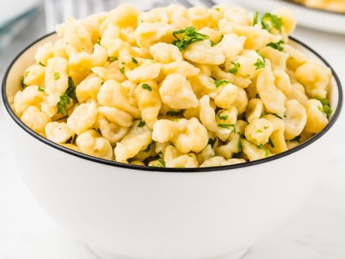

Spätzle

Description
Spätzle is a type of pasta or dumpling made with eggs, typically serving as a side for meat dishes with gravy. Commonly associated with Swabia, it is also found in the cuisines of southern Germany and Austria, Switzerland, Hungary, Vojvodina, Slovenia, Alsace, Moselle and South Tyrol.
Ingredients
- 2 cups all-purpose flour (you can also use whole wheat flour)
- 1 1/2 teaspoons salt
- 4 large eggs
- 1/2 cup milk or water + more as needed (milk produces a richer Spaetzle) (**add more flour if the dough is too runny, add more milk or water if it's too stiff)
- butter for serving
Steps
- Add the flour and salt to the bowl of a stand mixer. Stir to combine. Crack the eggs into a small bowl and whisk them. Make a well in the center of the flour mixture and pour the eggs in it. Add the milk (start with using slightly less and add more as needed). Attach a dough hook to the stand mixer and "knead" the dough for 16-20 minutes, or until bubbles appear (see pictured instructions for details). After 15 minutes or less of beating, use a wooden spoon to scoop and pull the dough. If bubbles/holes appear, the dough is done.
- Bring at least 2 quarts of lightly salted water to a boil, then reduce to a simmer. Using a Spätzle maker of your choice (I use and prefer the Spätzle press), press the noodles into the simmering water and cook for about 2-3 minutes, or until the noodles float to the top. Use a slotted spoon to transfer the noodles to a colander, and then dump the noodles in a large bowl of ice water. Drain the noodles again, toss with some melted butter and serve warm.
- Make Ahead: The Spaetzle can be stored in the fridge for at least a couple of days and then reheated. Melt some butter in a large skillet and toss the Spätzle in it to heat through.
Go Back